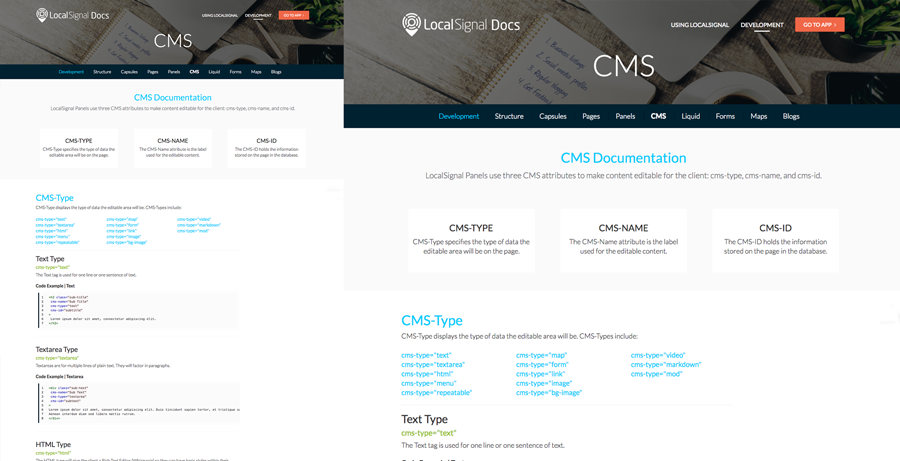

Discover
I researched developer needs, best practices for technical documentation, and how users would navigate a new platform from scratch.
- Identified primary users: LocalSignal developers and technical clients who need fast access to accurate information.
- Reviewed internal notes, documentation practices, and content gaps to understand starting constraints.
- Determined UX challenges for technical content: findability, hierarchy, and readability across multiple pages.
Key Insight: Developers require quick findability, a clear information hierarchy, and well-structured content, especially when building a documentation site from scratch.
Define
I established the content strategy, site structure, and UX principles to support efficient learning and content discoverability.
- Designed information architecture prioritizing user tasks and developer queries.
- Defined UX guidelines for layout, navigation, and content presentation.
- Created content strategy for writing and structuring technical documentation articles.
Develop
I designed, prototyped, and iterated on landing pages and forms with cross-team collaboration to validate solutions.
- Created wireframes and high-fidelity mockups in Adobe XD.
- Authored technical documentation articles in Markdown for clarity and consistency.
- Built responsive pages with HTML, CSS, and JavaScript following LocalSignal branding.
- Iterated design and content structure based on internal feedback and usability reviews.

View website ↗Deliver
Delivered a fully functional documentation website with structured content, clean UX, and easy navigation for developers.
- Built a multi-page site following LocalSignal branding standards and technical documentation best practices.
- Delivered wireframes, high-fidelity mockups, and finalized content.
- Ensured clear hierarchy, findability, and consistency across all pages.
- Created a scalable system to easily add or update documentation content over time.